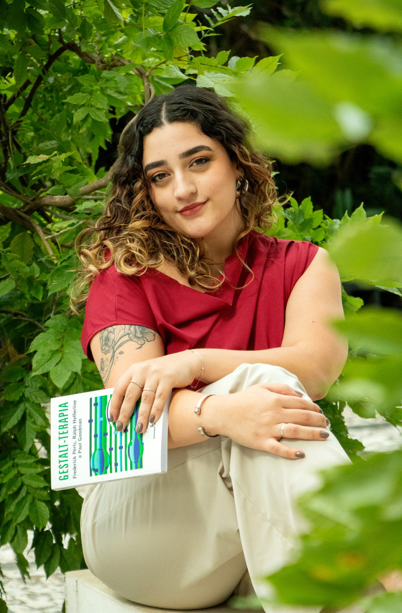
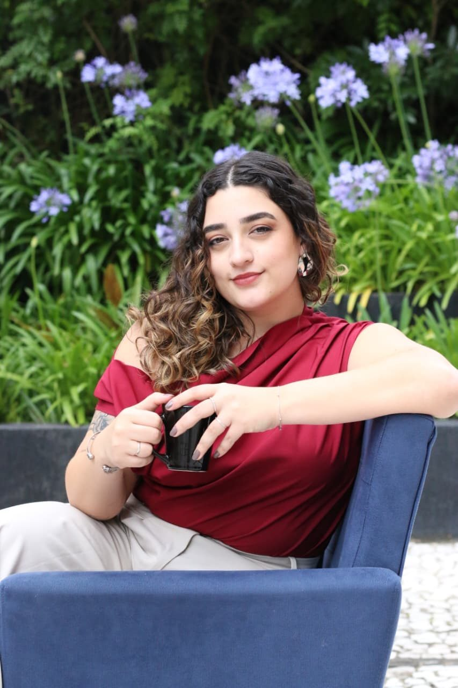
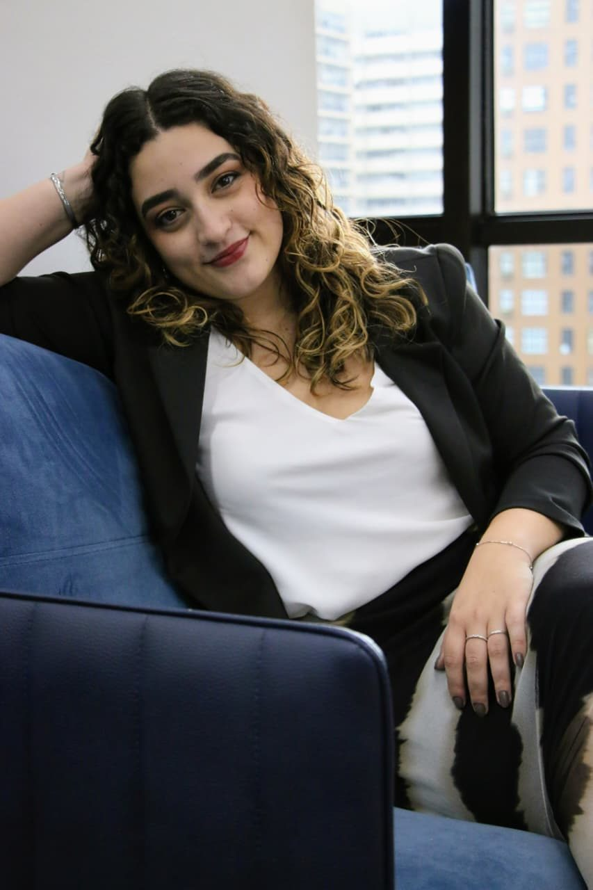

A terapia como encontro
Acredito que a psicoterapia é um encontro que possibilita ampliar a consciência sobre si mesmo, compreender padrões de funcionamento e construir novas formas de estar no mundo.
você, o outro e o mundo
Sou psicóloga clínica e atendo jovens e adultos, presencialmente em Curitiba e online, onde você estiver. Trabalho com a Gestalt-terapia, em um processo construído no seu tempo, que olha para o que você vive agora e para como você se relaciona consigo, com os outros e com o mundo.

Sou psicóloga clínica guiada pela curiosidade sobre a experiência humana e pelo desejo de criar espaços de escuta genuína.

Acredito que a psicoterapia é um encontro que possibilita ampliar a consciência sobre si mesmo, compreender padrões de funcionamento e construir novas formas de estar no mundo.
Atuo a partir da Gestalt-terapia, que valoriza o contato com a experiência presente, a responsabilidade sobre as próprias escolhas e a construção de relações mais autênticas consigo mesmo e com os outros.
Também sou professora de inglês e francês. Essa experiência fortaleceu minha sensibilidade para processos de aprendizagem, comunicação e desenvolvimento humano, e ampliou meu olhar sobre as diferentes formas pelas quais as pessoas constroem sentido, lidam com desafios e desenvolvem suas potencialidades.
O compromisso com o cuidado, o respeito à singularidade de cada pessoa e o interesse constante em aprender e me desenvolver como profissional.
Nem sempre existe um nome para o que se sente. Estes são alguns dos temas que costumam trazer as pessoas até a terapia.
O foco é a sua experiência, a forma como você se relaciona consigo, com os outros e com o mundo.
Mais do que explicar o porquê, a Gestalt busca ampliar a consciência sobre o como e o para quê das experiências, especialmente no aqui-agora.
Isso permite perceber padrões em tempo real e experimentar novas formas de se posicionar, levando à responsabilidade pessoal e a escolhas mais autênticas.
Busco sempre a compreensão genuína do seu ponto de vista, sem interpretações precipitadas ou pré-julgamentos.
Em Gestalt-terapia, saúde não é ausência de problemas e doenças. É a capacidade de se autorregular, de fazer escolhas com autonomia e responsabilidade e se adaptar de forma criativa às situações da vida, mantendo equilíbrio e autenticidade.
Um consultório em Curitiba, pensado para que você possa chegar como está. Sem pressa, com privacidade e com espaço para o que precisar aparecer.
Um ambiente reservado, em que o que é dito fica entre nós.
Um espaço seguro e respeitoso para a comunidade LGBTQIA+ e para a singularidade de cada pessoa.
Preparado para receber pessoas com mobilidade reduzida com conforto e segurança.
Um ambiente pensado para favorecer o processo terapêutico e a escuta.
Duas formas de estar em terapia, com o mesmo cuidado e o mesmo sigilo.
No consultório do Cabral, na R. Dr. Manoel Pedro, 365, sala 1602.
Por videochamada, para pessoas de qualquer lugar do mundo. Basta um lugar reservado e uma boa conexão.
Horário de Brasília (UTC−3). Os horários são combinados diretamente com você.
Dúvidas comuns de quem está pensando em iniciar terapia. Se a sua não estiver aqui, pode perguntar diretamente.
A psicoterapia não é exclusiva para pessoas com transtornos mentais ou diagnósticos psiquiátricos. Também não é necessário estar em crise ou em sofrimento extremo para iniciar um processo terapêutico.
Conflitos internos, dificuldades nos relacionamentos, mudanças na rotina, sensação de estagnação, incômodos recorrentes ou o desejo de se conhecer melhor já são motivos para procurar um terapeuta. Temas como tristeza, ansiedade, depressão, luto, dificuldade de se expressar ou de impor limites, desmotivação, procrastinação, traumas e transtornos são bem comuns em terapia.
A terapia não é apenas tratamento, mas também prevenção e crescimento. Todos nós, em algum momento, temos algo que pede atenção e consciência.
Se algo em você pede atenção, a terapia pode ser um caminho.
Nesses casos, a terapia pode ser um espaço de ampliação da consciência emocional, revisão de crenças, fortalecimento da autonomia, maior clareza nas escolhas e limites, melhora nas relações e desenvolvimento de recursos internos para lidar com desafios futuros.
É um momento de sair do automático e voltar o olhar para si.
A psicoterapia pode ser compreendida como um investimento contínuo na saúde mental, não apenas uma resposta a momentos de crise.
As sessões duram cerca de 50 minutos, podendo variar um pouco conforme a necessidade do dia. A frequência costuma ser semanal.
Quanto à duração do processo, não é possível definir previamente um número de sessões ou prometer uma “cura”. O tempo depende do trabalho realizado em conjunto, e não há um prazo fixo para o término. Idealmente, terapeuta e paciente conversam sobre o momento de espaçar as sessões até chegar à alta. Sim, receber alta em terapia é possível.
Encerrar não significa abandono. É quando se percebe que os recursos construídos já podem ser sustentados fora do ambiente terapêutico. Pode ser que a demanda inicial tenha se transformado ou se fechado; que haja mais consciência de si e dos próprios processos; mais autonomia e menos dependência do espaço terapêutico; relações mais conscientes e menos automáticas; ou a sensação de fechamento, pausa ou necessidade de experimentar a vida fora da terapia.
A vida não é estática. Novas demandas podem surgir, e você pode retornar à terapia quando sentir necessidade.
Não existe um tempo padrão, embora muitas pessoas sintam alívio logo nas primeiras sessões, por se sentirem escutadas e acolhidas. As primeiras mudanças costumam aparecer na forma de compreender experiências e sentimentos.
Transformações mais profundas exigem tempo, geralmente alguns meses, e dependem do engajamento no processo. A terapia vai além de “se entender melhor”. Há mudanças no sentir, no agir, na forma de se posicionar e se relacionar.
O processo não é linear. Há momentos mais leves e outros mais desafiadores. Ao entrar em contato com emoções e experiências antes evitadas, pode surgir desconforto ou confusão. Esses momentos não significam retrocesso. Eles indicam conscientização e reorganização interna.
A terapia não elimina todos os problemas da vida, mas é um espaço para transformar a maneira como você se relaciona com eles.
Se após um ou dois meses de sessões semanais você não perceber nenhum avanço, é importante conversarmos. Falar sobre frustrações e expectativas faz parte do processo, e podemos revisar objetivos, ajustar o foco ou refletir sobre a continuidade do trabalho. A terapia é um espaço de diálogo.
O psicólogo não decide pelo paciente. Ele ajuda a ampliar a consciência sobre sentimentos, necessidades, limites e consequências envolvidas em cada escolha.
Isso acontece por meio de perguntas, devolutivas e reflexões que ajudam a ampliar a percepção, mudar o ponto de vista e aprofundar questões que, sozinho, muitas vezes são difíceis de acessar. Um terapeuta presta atenção não só no conteúdo do que é dito, mas no como é dito.
Na Gestalt-terapia, o foco é fortalecer a sua capacidade de assumir as próprias decisões. Meu papel é fazer isso com uma escuta ética, respeitosa e acolhedora, sem julgamentos. E não, não sou aquele tipo de terapeuta calada. Vou devolver percepções, fazer perguntas para aprofundar os temas e, quando fizer sentido, propor reflexões e experimentos.
Meu papel não é dar conselhos ou dizer o que é certo. Ajudo você a perceber o que faz sentido dentro da sua história, do seu contexto e das suas possibilidades, porque a terapia não retira a sua autonomia. Pelo contrário, ela busca fortalecê-la.
No ambiente terapêutico existe sigilo. Tudo o que é dito permanece em confidencialidade, exceto em situações previstas por lei que envolvam risco de vida. Mesmo nesses casos, busco agir com responsabilidade e em diálogo com você. O vínculo e a confiança são construídos ao longo do processo.
Não é preciso preparo específico. O essencial é chegar presente e aberta ou aberto à própria experiência.
É comum sentir vergonha ao ter o foco em si, e isso pode, inclusive, ser trazido como tema. As sessões seguem o seu ritmo, sem entrar em assuntos que você não se sinta confortável para aprofundar naquele momento. No início, eu conduzo mais, até que você se sinta à vontade.
Também é comum não saber o que falar. Não existe uma lista do que “deve” ser contado. O mais importante é aquilo que está vivo para você naquele momento. Se não souber por onde começar, podemos começar justamente por isso.
A conversa é parte importante, mas não é só isso. Trabalhamos também emoções, corpo, sensações e autopercepção. Chorar, rir ou precisar de silêncio faz parte do processo e é respeitado no seu ritmo.
Os valores e a forma de pagamento são combinados no início do processo, e você pode conversar sobre isso diretamente comigo.
Nas duas modalidades, presencial no consultório em Curitiba e online, por videochamada no Google Meet, para pessoas de qualquer lugar do mundo.
Você não precisa chegar com tudo resolvido, nem com as palavras certas. Conte um pouco do que te trouxe até aqui e seguimos a partir disso.

Escolha o canal em que você se sente mais à vontade. Eu mesma irei responder.